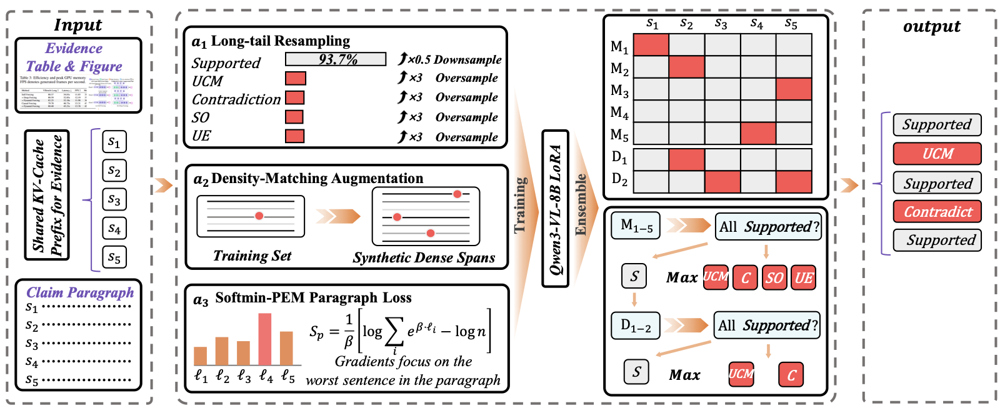
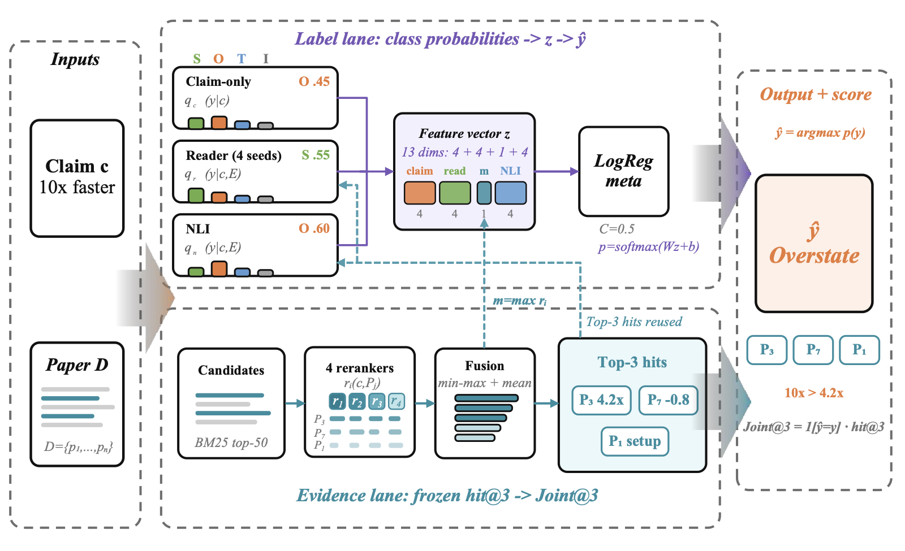

Oral presentation
Overview
NLPCC-2026 Shared Task 10 asks whether a fluent scientific statement is actually supported by its evidence. Track 1 assigns one of five faithfulness labels to each sentence of a results paragraph given the referenced figure or table. Track 2 assigns one of four citation-support labels to an atomic claim given the full text of the cited paper, and returns the supporting paragraphs.
The two tracks fail for different reasons, so DualFaith is two specialized pipelines rather than one model. Track 1 is bottlenecked by minority-class recall under a paragraph-level exact-match metric: a single missed minority sentence invalidates a whole paragraph. Track 2 is bottlenecked by the coupling between retrieval and labeling under domain shift. Each pipeline is designed around its own bottleneck.


Official results
Scores below are the final official figures. The complete standings for both tracks are published on the NLPCC-2026 Task 10 official leaderboard ↗.
| System | Final | Phase 1 | Phase 2 |
|---|---|---|---|
| SUAT-NLP | 68.90 | 51.85 | 85.95 |
| DualFaith (XJDX_001) | 68.79 | 50.61 | 86.97 |
| BIT-TrustAI | 57.99 | 44.09 | 71.88 |
| ZZUNLP_Han | 55.47 | 42.44 | 68.50 |
| YNU-HPCC | 46.16 | 31.93 | 60.39 |
Second place by 0.11 points, with the best Phase-2 score among the top five.
| System | Final | Macro-F1 | Joint@3 | Phase 1 | Phase 2 |
|---|---|---|---|---|---|
| DualFaith (XJDX_001) | 86.27 | 91.18 | 81.37 | 86.21 | 86.33 |
| Lenormand System | 82.99 | 89.55 | 76.43 | 81.28 | 84.70 |
| HER-DAC | 81.61 | 93.05 | 70.16 | 81.70 | 81.52 |
| ZZUNLP_Han | 81.38 | 94.25 | 68.51 | 80.88 | 81.88 |
| SUAT-NLP | 79.01 | 91.02 | 67.00 | 80.88 | 77.13 |
First place with a 3.28-point lead, almost all of it from Joint@3 (+4.94 over second). Phase 1 and the blind Phase 2 differ by only 0.12. For reference, prompting-only baselines reach Phase-1 scores of 40.51 (GPT-5.4), 38.97 (Gemini 3.1 Pro) and 30.35 (Qwen3.6-Plus) — well below every fine-tuned submission.
Citation
@inproceedings{zhao2026dualfaith,
title = {DualFaith at {NLPCC}-2026 Task 10: Faithfulness Verification
for Scientific Reports against Experimental Results and
Citation Evidence},
author = {Zhao, Wenbiao and Shi, Longkun and Zuo, Zicheng and Tohti, Turdi},
booktitle = {Natural Language Processing and Chinese Computing (NLPCC 2026)},
series = {Lecture Notes in Computer Science},
publisher = {Springer},
year = {2026},
note = {To appear}
}